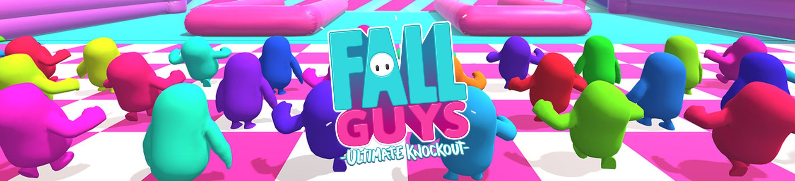

Source de l'image
Fall Guys - Les maps
Course :
- • Hit Parade : Coutourne les obstacles et précipite-toi vers la ligne d'arrivée !
- • Ruée vers les portes : Pulvérise les portes et précipite-toi vers la ligne d'arrivée ! Certaines portes sont réelles, d'autres non !
- • Ascension poisseuse : Échappe à la lave qui monte et évite les obstacles pour atteindre la ligne d'arrivée !
- • Hauteurs vertigineuses : Contourne les obstacles et précipite-toi vers la ligne d'arrivée !
- • Sur la pointe des pieds : Évite les fausses dalles et trouve les chemins cachés pour atteindre la ligne d'arrivée !
- • Les balançoires : Cours en équilibre sur des rangées de balançoires pour atteindre la ligne d'arrivée !
- • Le tournenrond : Contourne les obstacles et précipite-toi vers la ligne d'arrivée !
- • Perkute-porte : Évite les portes qui s'ouvrent et se ferment, puis précipite-toi vers la ligne d'arrivée !
- • Faire le mur : Saisis des blocs et déplace les ! Aménage un des passages et bondis pour franchir des murs et atteindre la ligne d'arrivée !
- • Esquive chute : Évite les fruits volants et précipite-toi vers le tapis roulant pour atteindre la ligne d'arrivée !
- • Fièvre chevalière : Contourne les obstacles médiévaux et précipite-toi vers la ligne d'arrivée !
Survie :
- • Fête aux blocs : Évite les murs et reste sur la plateforme !
- • Club des sauts :SAUTE au-dessus de la poutre rotative et ne tombe pas dans le mucus !
- • Ça roule : Déplace-toi entre les anneaux rotatifs pour éviter de tomber dans le mucus !
- • Attrape queues : Certains joueurs commencent avec une queue. D'autres, non. Essaie d'attraper une queue et arrange-toi pour en avoir une à la fin du temps imparti !
- • Les deux font la paire :Mémorise les icônes sur les dalles. Lorsqu'une icône s'affiche à l'écran, positionne-toi sur une dalle correspondante pour ne pas tomber dans le mucus !
- • Légende badaboum : SAUTE et PLONGE à travers des cerceaux pour marquer 6 points !
Équipe :
- • Ouplaboum : SAUTE et PLONGE à travers des cerceaux pour marquer des points !
- • Maudit : La première à être intégralement maudite est éliminée !
- • Attrape queues en équipe : Arrange-toi pour que ce soit ton équipe qui possède le plus de queues à la fin du temps imparti !
- • Assaut des œufs : Attrape des œufs, puis range-les dans le nid de ton équipe pour marquer des points !
- • Entasseurs : Garde les balles dans ta zone pour marquer des points !
- • Rock 'N' Roll Œuvrez de concert pour POUSSER la balle jusqu'à la ligne d'arrivée avant les autres équipes !
- • Balle qui tombe : Marque des points en lançant la balle dans le but adverse. Un travail d'équipe est indispensable !
Finale :
- • Saute toujours : Pour gagner la COURONNE, SAUTE au-dessus du faisceau rotatif et évite le sol qui dégringole !
- • Hexagone inferal : Des fragments du sol tombent lorsque tu marches dessus. Bouge non-stop et survis le plus longtemps possible pour GAGNER la COURONNE !
- • Chute montagneuse : Sois le premier à atteindre le sommet et ATTRAPE la COURONNE !